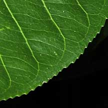
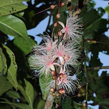
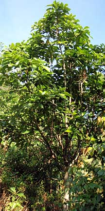
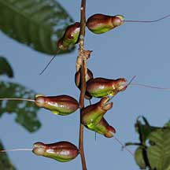
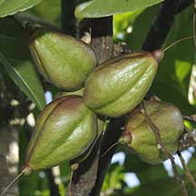

|
|
| plants text index | photo index |
| coastal plants |
| Putat sungei Barringtonia racemosa Family Lecythidaceae updated Jun 2020 Where seen? This tree with hanging garlands of pretty pink fluffy flowers is now rare in the wild. It is, however, being planted in some of our coastal parks and reserves. Wild trees are found in damp places near mangroves, tidal rivers, sandy or rocky shores, freshwater swamps, peat swamp forests. And even banks of tidal creeks and muddy ditches in rice-fields in Malaya. Features: A shrub or small, straggling tree (5-27m tall). Leaves (20-30cm) thin leathery, midrib and veins often yellow. The leaves are finely toothed at the edges. Old leaves wither orange to red. |
 Leaf edge finely toothed. |
 Blooming flowers on a long hanging spike. |
 Planted tree. Chek Jawa, Mar 09 |
|
 After the stamens have fallen. |
 Fruits egg- or pear-shaped with angles. |
| Flowers small (3-5cm) a pom-pom of many short pink stamens with small
pink petals. The flowers emerge from a long hanging spike (40-100cm
long). According to Giesen, the night-blooming flowers have "a
very strong fragrant scent" and are pollinated by moths and small
bats. Flowering occurs year round. Fruit (3-8cm long) egg- or pear-shaped, sometimes weakly angled or with four faint grooves, green ripening to flushed reddish. The fruit floats and may travel in seawater for many months. Each fruit usually contains only one seed (2-4cm long). It is the food plant for caterpillars of the moths Attacus atlas (Atlas Moth), Gnathmocerodes tonsoria, and Thosea andamanica. Human uses: The plant contains a toxin called saponin, concentrated mainly in the seeds but also found in other parts of the plant. According to Burkill, the leaves are used in a poultice for itching and chicken-pox, as well as to treat sore throats. The young leaves are eaten raw in Eastern Malaysia, and in the Philippines the fruits are used to poison wild pigs. Status and threats: It is listed as 'Critically Endangered' on the Red List of threatened plants of Singapore. |
| Putat sungei on Singapore shores |
On wildsingapore
flickr
|
|
Links
References
|